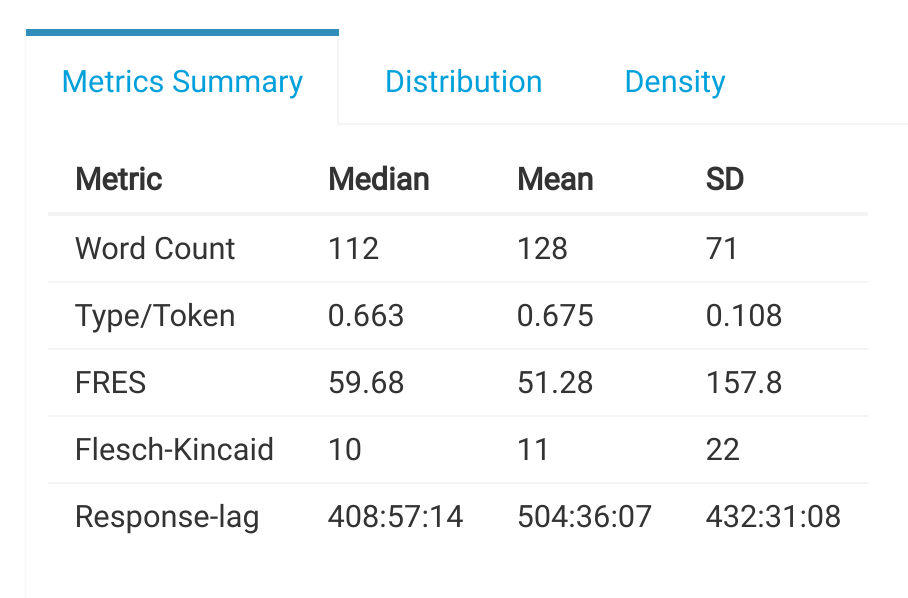

4.3 Metrics Summary
This section provides a summary of the key metrics extracted from the discussion posts.

Metrics Summary
- Word Count: Number of words in the discusion posts.
- Type/Token: The type to token ratio found across all posts.
- FRES: The Flesch Reading Ease Score.
- Flesch-Kinkaid: The Flesch-Kincaid reading ease score is a transformation of the FRES made to facilitate interpretation. The number indicates the number of years of formal education a person would need in order to read the text in question.